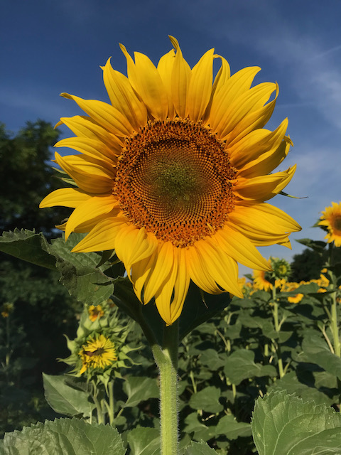
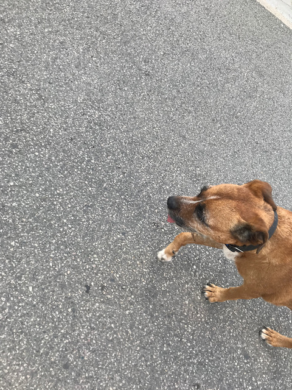
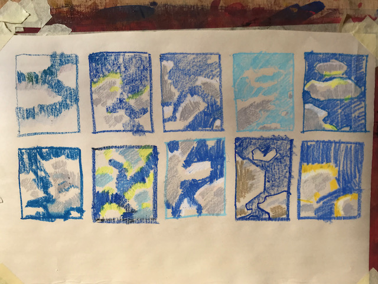
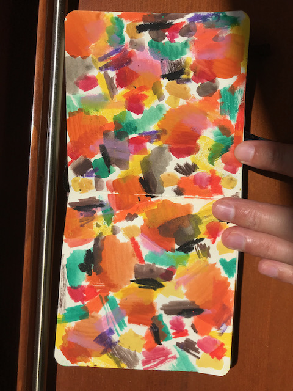
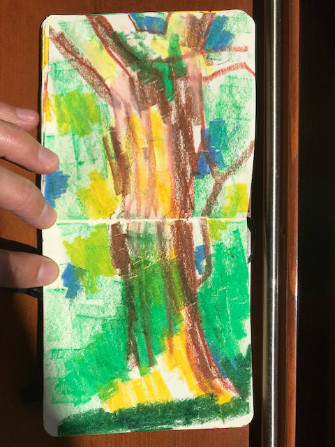
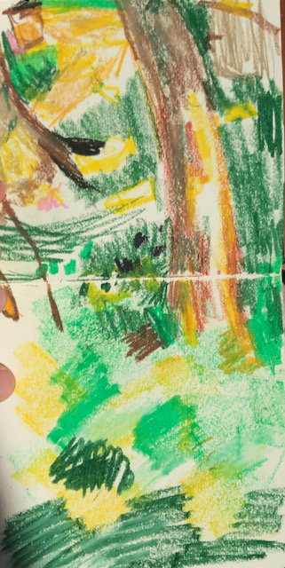

I am writing a page about my learning. I am doing the 10 day gong from the tao podcast, I am running almost everyday, I do some yoga. I learnt about the slope intercept form and about how to find the slope of a function. The slope is the change in y divided by the change in x. The idea is to write elements of recall here, to practice recall, however badly. I felt down because of rejections from applications, because I believe that I am at a good enough level to do an apprenticeship or a course, but I didn’t get accepted to the ones that I applied to. I am learning to trust the ideas and starting points that I have about learning. I used to not follow up on ideas that I do now. For example I have an idea about what to play on the piano, or what to write here, and I could have written that, or I could have played that idea on the piano, I could practice what I have in mind. Julia Cameron writes about this somewhere in the Artist’s Way. To not trample the flowers, shoots, sprouts. It is better to do 2-10 minutes of everything with a fresh spirit than becoming anxious from one thing and wasting a day and energy being depressed.
     